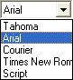
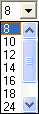
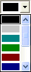
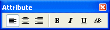

Um die Schriftart von Variablen oder von statischem Text zu ändern, werden die ausgewählten Elemente mit dem
n Zeiger
markiert.
Anschließend verwenden Sie die Formatierungsleiste, um die gewählte Schriftart, die gewünschte Schriftgröße und die gewünschte Schriftfarbe auszuwählen.
Wenn Sie die Schriftart für alle Variablen ändern möchten, verwenden Sie den Menüeintrag
1 Editieren
1 Alles selektieren
und führen dann die Formatierung durch.
In der Formatierungsleiste wählen Sie die gewünschte Schriftart unter
Ø Schriftart

aus den zur Verfügung stehenden Schriftarten aus.
Achtung
Achten Sie darauf, dass die verwendete Schriftart von Ihrem Drucker zu 100% unterstützt wird. Falls es eine Abweichung geben sollte, kann es zu Verschiebungen von Variablen kommen, die eine Neupositionierung erforderlich macht. Nicht vorhandene Schriftarten werden von Windows automatisch durch die nächstähnliche Schriftart ersetzt.
Für die Änderung der Schriftgröße wählen Sie unter
Ø Schriftgröße

die gewünschte Schriftgröße.
Die Schriftfarbe bestimmen Sie mit dem Auswahlfenster
Ø Farbe

Wenn Sie spezielle Formatierungen für Ihren Text wünschen, können Sie aus dem Auswahlfenster
Ø Attribut

auswählen, ob der Text
ü normal
ü fett
ü kursiv
ü unterstrichen
ü durchgestrichen
ü linksbündig
ü rechtsbündig oder
ü zentriert
dargestellt werden soll.